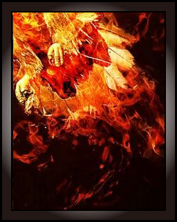
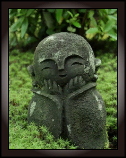
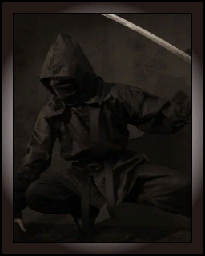
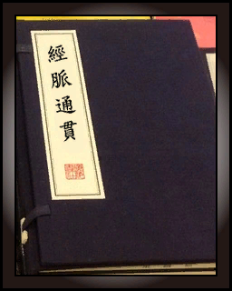
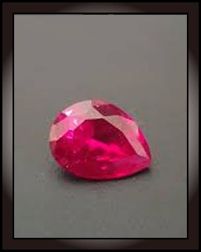
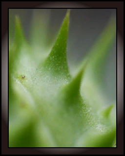
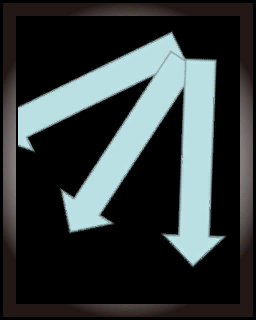
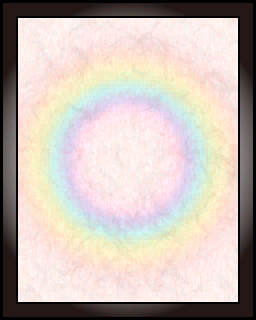

物品：卡牌
本条目内容的主要数据测试收集整理者是doomer
卡牌是一种可以放进玩家卡槽内提供各类属性加成的物品。
所有卡牌都可以在附魔台处消耗黑曜石、水晶和龙珠等材料被强化（如果使用了黄色水晶作为强化材料，卡牌将会被降低强化等级并返还其他颜色的水晶），最大强化次数从0次到7次不等。卡牌的最大强化次数会在光标悬停在物品时显示的物品信息中显示。
如无特殊标注，所有的卡牌都可以以开宝箱和敌怪掉落的方式获得。
所有的卡牌都可销毁、不可出售、可交易、不可作为礼物。【需调查确认】
一共有17种卡牌：
| 卡牌贴图 | 卡牌名称 | 卡牌介绍 | 固定效果 | 随机效果 | 备注 |
|  | 不死鸟之羽 |
刻印有 传说中，每隔五百年左右，不死鸟便会采集各种有香味的树枝或草叶，并将之叠起来后引火自焚，最后留下来的灰烬中会出现重生的幼鸟。 佩戴者能够大幅提高自身生命值。 |
最大生命值提升：60% |
近战精通：+5%~10% 魔法精通：+5%~10% 枪械精通：+5%~10% 防御：+10%~40% 生命值：+50%~338% 以上属性在不同的卡牌中最多同时存在1种 |
玩家的生命值加点不计算在最大生命值+60%的效果内，也就是说不死鸟带来的血量提升只有玩家基础血量225+卡牌的60%提升 |
| 忍耐的要石 |
刻印有要石的能力卡 要石是镇守一方水上的磐石，饱经日晒雨淋，依旧雷打不动。 正是这样的忍耐力才足矣压住邪物或是灾害。 |
防御提升：60% |
近战精通：+5%~10% 魔法精通：+5%~10% 枪械精通：+5%~10% 防御：+10%~60% 生命值：+50%~225% 以上属性在不同的卡牌中最多同时存在2种 |
||
|  | 替身地藏 |
刻印有替身地藏的能力卡 战斗中偶然可以发动并将一次伤害中和的能力卡，值得感激的地藏菩萨的吉祥物。 佩戴者可以佩戴多个以提高发动概率。 |
闪避提升：20% |
近战精通：+5~10 魔法精通：+5~10 枪械精通：+5~10 防御：+10~40 生命值：+50~225 以上属性在不同的卡牌中最多同时存在2种 |
|
| 易接布 |
刻印有一张布的能力卡 易接布的性质是遇强则强，遇弱则弱，当猛烈的冲击迎来时，攻击者会收到当头一棒。 佩戴者的格挡能够将弹幕以三倍的速度反弹回去。 |
近战精通：+5~10 魔法精通：+5~10 枪械精通：+5~10 防御：+10~40 生命值：+50~225 以上属性在不同的卡牌中最多同时存在1种 |
|||
| 吸血鬼的血脉 |
刻印吸血鬼的血脉的能力卡 吸血鬼最引以为傲的身体构成，不是尖牙利爪或蝠翼，而是他们的血脉。 吸血鬼的血能够和所有血相融，但最契合的依然是人类的血。 |
生命偷取：20% |
近战精通：+5~10 魔法精通：+5~10 枪械精通：+5~10 防御：+10~40 生命值：+50~225 以上属性在不同的卡牌中最多同时存在2种 |
||
|  | 偷袭者的极意 |
刻印有蒙面的能力卡 偷袭者往往需要找准时机，把手中的匕首贯穿敌人的要害。 而有能的偷袭者则十分擅长寻找时机。/p> |
暴击提升：55% |
近战精通：+5~10 魔法精通：+5~10 枪械精通：+5~10 防御：+10~40 生命值：+50~225 以上属性在不同的卡牌中最多同时存在2种 |
|
|  | 经脉通贯 |
刻印有静脉学典籍的能力卡 原本是用于练习针灸的药理书籍，在盗贼手中却成了修炼点穴的指导书。 记载着人体全身上下各处穴位，甚至各类其他生物也都有记载。 难道是给兽医用的？ |
暴伤提升：60% |
近战精通：+5~10 魔法精通：+5~10 枪械精通：+5~10 防御：+10~40 生命值：+50~225 以上属性在不同的卡牌中最多同时存在2种 |
|
| 鬼之角 |
刻印有鬼之项角的能力卡 鬼是长有角，力大无穷的种族 而鬼之间角力时，有时会以两角相抵，据说相抵的一刹会向四周产生强劲的气流。 这样的角，不单单是坚硬，仿佛其中就蕴含了巨大的力量一样。 |
近战提升：40% |
近战精通：+5~15 魔法精通：+5~10 枪械精通：+5~10 防御：+10~40 生命值：+50~225 以上属性在不同的卡牌中最多同时存在2种 |
||
| 穷追之旗帜 |
刻印有飘扬旗帜的能力卡 穷追者已将自己置于彻底胜利的一方，故不存在胆怯和畏惧。 旗帜能够让战斗中处于优势的我方士气再次被鼓舞。 |
乘胜追击：40 |
近战精通：+5~10 魔法精通：+5~10 枪械精通：+5~10 防御：+10~40 生命值：+50~225 以上属性在不同的卡牌中最多同时存在2种 |
||
| 自爆型人偶 |
刻印有自爆型人偶的能力卡 自爆型人偶意味着一次战斗的视死如归，为达胜利的不惜代价。 能够让战斗中均势甚至劣势的人重燃斗志，孤注一掷。 |
背水一战：40 |
近战精通：+5~10 魔法精通：+5~10 枪械精通：+5~10 防御：+10~40 生命值：+50~225 以上属性在不同的卡牌中最多同时存在2种 |
||
| 巫女的护身符 |
刻印有东方护身符的能力卡 巫女的护身符，或许是巫女佩戴，也或许是巫女赠与了其他人的饰品。 但其中一定饱含巫女的信仰。 佩戴此能力卡者，可以获得来自神明的庇佑，可以对邪鬼造成双倍的伤害。 |
近战精通：+5~10 魔法精通：+5~10 枪械精通：+5~10 防御：+10~40 生命值：+50~225 以上属性在不同的卡牌中最多同时存在1种 |
|||
|  | 贤者之石 |
刻印鲜血般的宝石的能力卡 贤者之石是一个神话般的物质，被认为能拿来将一般贱金属变成贵重金属，或者制造长生不老的灵药。 贤者之石是魔法五大要素的结晶。 贤者之石含有的魔力量无法估量。 |
法力提升：150% |
近战精通：+5~10 魔法精通：+5~15 枪械精通：+5~10 防御：+10~40 生命值：+50~225 以上属性在不同的卡牌中最多同时存在1种 |
|
| 魔导增幅器 |
刻印着复杂的蒸汽风手持机器的能力卡 魔导增幅器是一种实用的机械，内部含有许多保质期很长的魔法原料，这种好看实用的机械除了有点重以外没有什么缺点。 初习魔法的新手不擅长控制魔法的走向与流动，所以蕴藏在体内的魔法能量不会太多，否则就会被魔法侵蚀本身。 因此，新手无法用自身的能量启动一些破坏力较大的魔法，他们就会使用有自我蕴藏魔法能量的魔导增幅器来启动这些魔法。 |
法伤提升：40% |
近战精通：+5~10 魔法精通：+5~15 枪械精通：+5~10 防御：+10~40 生命值：+50~225 以上属性在不同的卡牌中最多同时存在2种 |
||
|  | 蒺藜 |
刻印有蒺藜的能力卡 蒺藜是长满刺的植物。 果刺易粘附家畜毛间，损害毛皮的质量。 佩戴者以任何方式造成的伤害都会附着蒺藜。 |
附带真伤：12 |
近战精通：+5~10 魔法精通：+5~10 枪械精通：+5~10 防御：+10~40 生命值：+50~225 以上属性在不同的卡牌中最多同时存在2种 |
|
| 一分为二 |
刻有二联弹幕模式式样的能力卡 是弹幕模式约定俗成的具象化。 |
附带真伤：5 |
近战精通：+5~10 魔法精通：+5~10 枪械精通：+5~10 防御：+10~40 生命值：+50~225 以上属性在不同的卡牌中最多同时存在2种 |
||
|  | 一分为三 |
刻有三联弹幕模式式样的能力卡 是弹幕模式约定俗成的具象化。 |
近战精通：+5~10 魔法精通：+5~10 枪械精通：+5~10 防御：+10~40 生命值：+50~225 以上属性在不同的卡牌中最多同时存在1种 |
||
|  | 空白之卡 |
未刻印任何东西的能力卡 但也因此孕育着无限的可能。 |
近战精通：+5~10 魔法精通：+5~15 枪械精通：+5~10 防御：+10~40 生命值：+50~225 生命提升：+0%~15% 暴击提升：+0%~15% 暴伤提升：+0%~15% 法伤提升：+0%~15% 枪伤提升：+0%~15% 生命偷取：+0%~5% 背水一战：+0~10 乘胜追击：+0~10 防御穿透：+0~6 附加真伤：+0~3 以上属性在不同的卡牌中最多同时存在18种 |
警告：该卡数据尚未验证，很可能并不准确 |